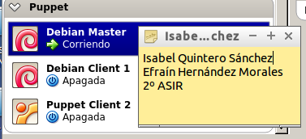
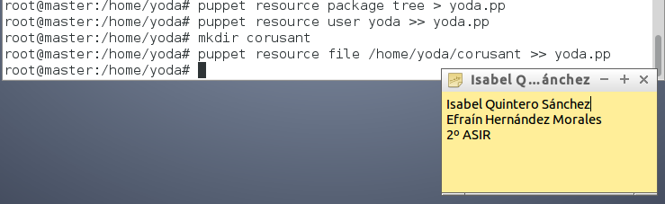
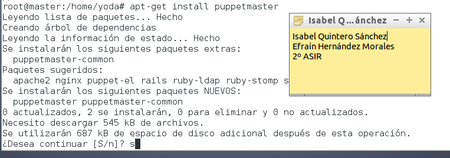

1. MASTER
Empezamos preparando las máquinas virtuales. Tenemos un master y cliente en entorno Debian y un segundo cliente en entorno Windows.
Vamos a la terminal del Master y entramos en el fichero de la configuración de interfaces de red ('/etc/network/interfaces'), asignándole una ip estática.
El siguiente paso es editar el archivo /etc/hostname indicándole que el nombre del equipo es "master.isaefra".

A continuación, añadimos las ip de los hosts clientes en el archivo /etc/hosts, quedando de la siguiente forma:
Hacemos la comprobación de que todos los pasos realizados anteriormente se han ejecutado correctamente.
1.1 Ejemplo manual
Antes de nada, instalamos el paquete tree desde la terminal mediante el comando "apt-get install tree".
Seguidamente, creamos el usuario "yoda".
Dentro de /home/yoda creamos la carpeta "tatooine"·

Luego, vamos a averiguar la configuración que lee puppet de estos recursos. Para ello ejecutamos los comandos siguientes (para realizar el último comando, debemos crear la carpeta "corusant"):
Comprobamos que el contenido del fichero yoda.pp sea el generado por el comando ejecutado anteriormente.
Por último, Desinstalar el paquete tree y eliminar la carpeta..
Finalmente, ejecutamos el comando "puppet apply yoda.pp" y comprobamos los resultados:
1.2 Primera versión del fichero pp
Instalando y configurando Puppet en el master.
Empezamos instalando el paquete puppetmaster en nuestra máquina.
A continuación, creamos las carpetas files y manifests en "/etc/puppet/". También creamos la carpeta "classes" en "/etc/puppet/manifests/". Además, creamos el archivo readme.txt en "/etc/puppet/files/". Seguidamente, también creamos el archivo "site.pp" en " /etc/puppet/manifests/". Y, por último, creamos el archivo "hostlinux1.pp" en "/etc/puppet/manifests/classes/".
El archivo "readme.txt" lo editamos de la siguiente forma:
El fichero "site.pp" lo rellenamos con el siguiente código:

Y, por último, el fichero "hostlinux1.pp" contiene la siguiente secuencia de código:
Reiniciamos el servicio: "/etc/init.d/puppetmaster restart" y consultamos log por si hay errores: "tail /var/log/syslog"
Cliente Puppet Debian
Éste será nuestro client 1 de Puppet. Será un sistema operativo Debian.
Comenzamos con los preparativos de la máquina virtual. Empezamos añadiéndole una ip estática.
Ahora, al /etc/hosts le añadimos las siguientes ip asociadas a sus dominios.
Por último, hacemos las pruebas de comando para ver si está todo correcto.
Tras comprobar que está todo en orden, procedemos a instalarle el paquete "puppet".
Añadimos a /etc/puppet/puppet.conf quién es el master.

Editamos el archivo /etc/default/puppet, y modificar la línea siguiente indicándole "START=yes".
Reiniciamos el servicio y comprobamos los log del cliente: tail /var/log/syslog.
3. Aceptar Certificado
Antes de que el master acepte a client1.isaefra, como cliente, se deben intercambiar los certificados.
Vamos al master y consultamos las peticiones pendiente de unión al master:
Aceptamos al nuevo cliente desde el master:
3.1 Comprobación Final
Vamos al cliente 1 y antes que nada reiniciamos la máquina. Tras esto, ejecutamos comando para comprobar errores: "puppet agent --server master.nombregrupo --test"
Para ver errores podemos reiniciar el servicio puppet en el cliente, y consultar el archivo de log del cliente: tail /var/log/syslog.
4. Segunda versión del fichero pp
Primero hemos probado una configuración sencilla en PuppetMaster. Ahora podemos pasar a algo más complejo como este apartado.
Creamos el archivo "hostlinux2.pp" con el siguiente contenido: .

Las órdenes de configuración de puppet significan lo siguiente:
- package: indica paquetes que queremos que estén o no en el sistema.
- group: creación o eliminación de grupos.
- user: Creación o eliminación de usuarios.
- file: directorios o ficheros para crear o descargar desde servidor.
Modificar site.pp con:

Tras esto, reiniciamos la máquina y probamos con un test.

5. Cliente puppet windows
Enlace de interés: http://docs.puppetlabs.com/windows/writing.html
Antes que nada configuramos la máquina windows añadiendole una ip estática:
A continuación, vamos al master y editamos el "site.pp" de la siguiente forma:

Seguidamente, editamos el archivo "C:\Windows\System32\drivers\etc\hosts" de nuestro cliente.
Tras esto, instalamos nuestro puppet client de windows y hacemos una prueba para ver si funciona correctamente los comando en el entorno windows:
A continuación, vamos al dominio de windows y lo denominamos "client2". Después, vamos a nuestro master y consultamos las peticiones pendiente de unión al master. Tras esto, aceptamos al nuevo cliente desde el master.
Tras aceptar al nuevo cliente desde el master, vamos a nuestro windows y hacemos la prueba.
Vemos que se ha generado correctamente y comprobamos si se ha creado el archivo de texto C:\warning.txt.
5.2 Versión 2.0: Creación de Usuarios
Por último, vamos al site.pp y editamos el archivo añadiendo el siguiente bloque de código que lo que hará será la creación de usuarios en nuestro windows.
Seguidamente, reiniciamos el servidor master y ejecutamos la prueba en nuestro cliente.
Comprobamos que el codigo se ha ejecutado de forma correcta y verificamos la creación de usuarios en el panel de control.